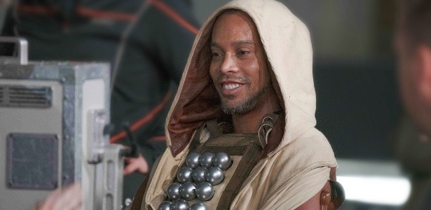

Quando Ronaldinho compartilhou esta foto nas suas redes sociais em 2017, a internet veio abaixo com memes tipo "Star Wars: O Último Jedibre". Ele se vestiu de Obi Wan Kenobi para a gravação de um comercial da Heineken sobre a Liga dos Campeões, que recriou lances famosos de jogadores na competição sob a ótica de grandes sucessos do cinema. A jogada escolhida para o Jedi Ronaldinho foi a cobrança de falta que ele bateu por baixo da barreira no jogo contra o Werder Bremen na temporada 2006/2007.
| Nome: | Ronaldo |
| Idade: | 40 |
| Nacionalidade: | Brasileiro |